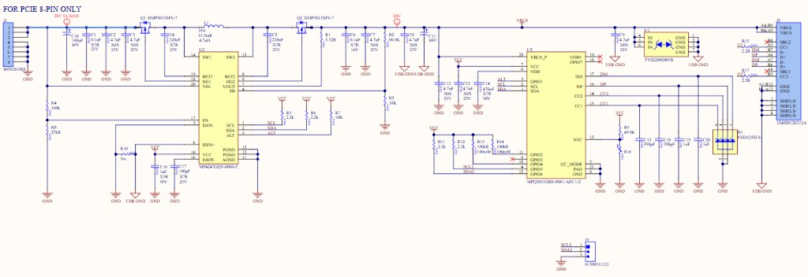
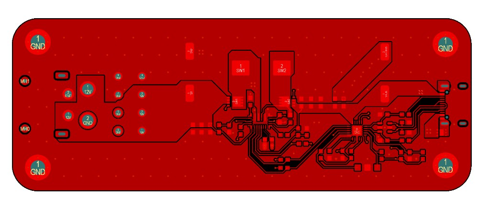
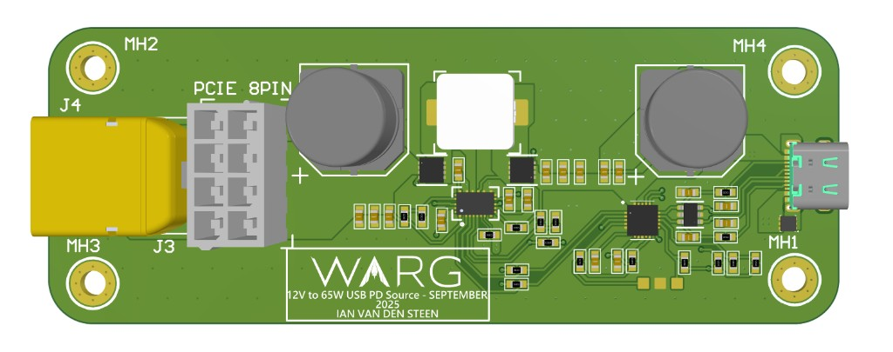

Power electronics · PCB
100W USB PD Source Custom PCB
Custom PCB that takes power from common PC PSU connectors and outputs regulated power over USB-C using USB PD 3.0, up to 100W.



Overview
Custom PCB that takes power from common PC PSU connectors and outputs regulated power over USB-C using USB PD 3.0, up to 100W.
Notable features
- 3.6–36V flexible input
- 0–20V programmable output
- 5A continuous current with low-side current sense
- Programmable buck-boost converter
- Designed in Altium Designer to JLCPCB manufacturing constraints
- Input filter simulated in LTSpice
Project details (Situation · Task · Action · Result)
Situation
Needed a way to use existing PC PSUs to power lab equipment accessibly.
Task
Design a PCB accepting PCIe 8-pin or EPS-12V input and outputting power over USB-C via USB PD 3.0.
Action
Engineered full system architecture and component selection; integrated a programmable buck-boost converter with a USB-PD source controller negotiating with a downstream sink; simulated the input filter on startup in LTSpice.
Result
Fully compliant USB-PD 3.0 source taking 3.6–36V input (XT or PCIe 8-pin), negotiating with sink and stepping voltage up/down to deliver up to 100W (20V at 5A).